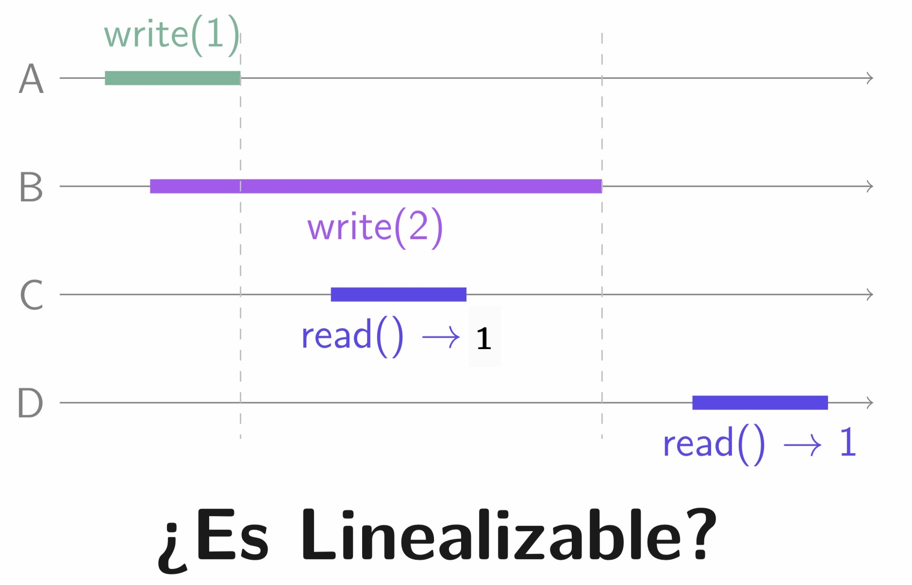
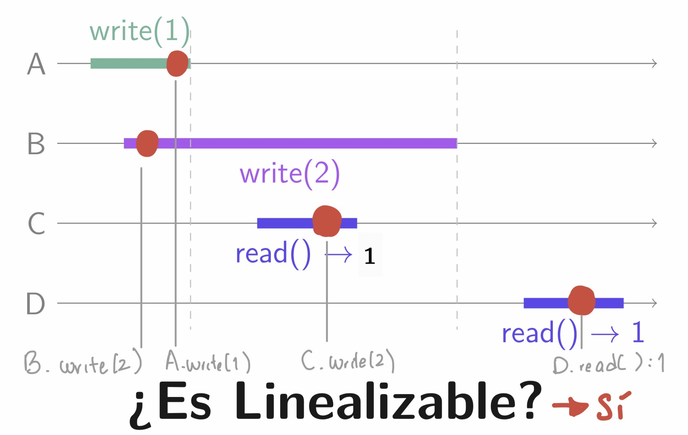
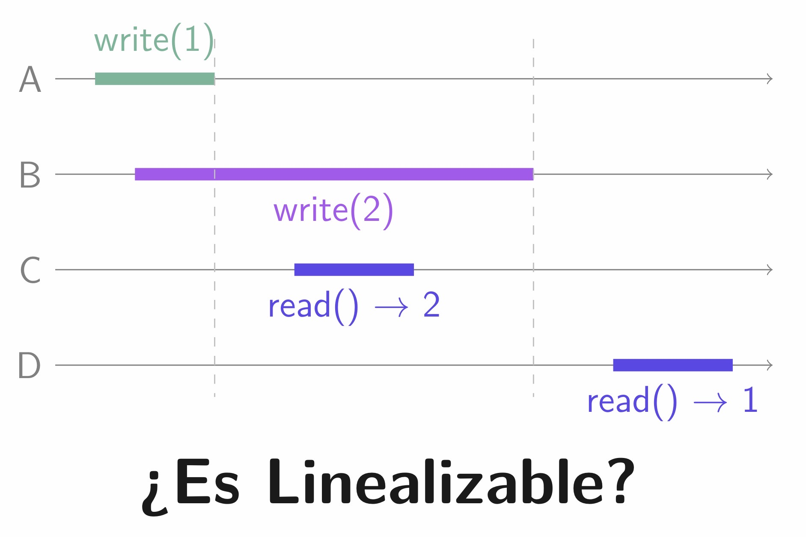
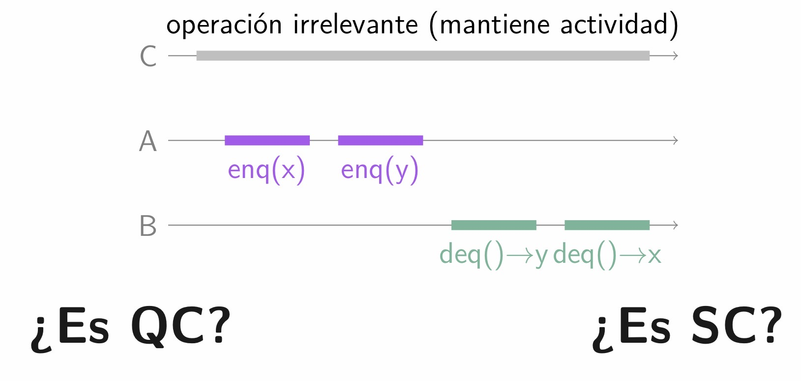
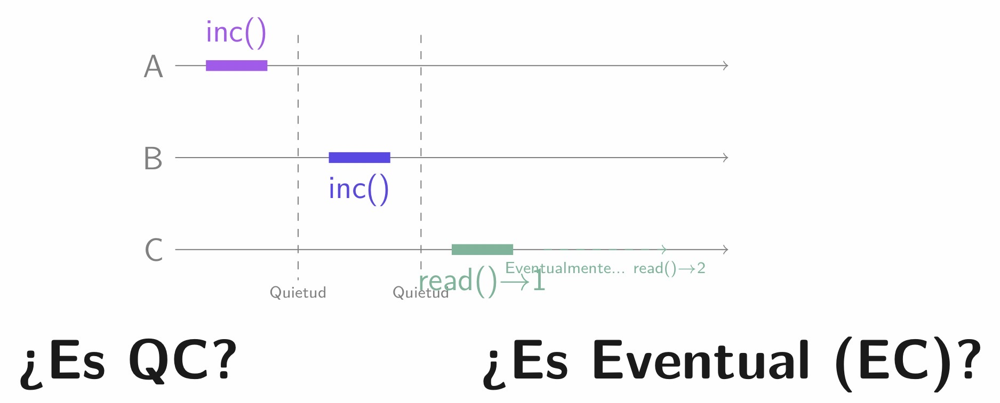

Distintos sabores de corrección
1. Análisis de algoritmos
Cuando aprendemos a programar, suele ser en el mundo secuencial. Analizamos el número de pasos de cómputo, ciclos y condicionales. Si profundizamos, comprendemos la lógica mediante técnicas como "dividir y vencer" o algoritmos "glotones", entre otros.
En este paradigma, determinamos si una implementación es correcta encontrando la propiedad que se mantiene en cada paso: la invariante. Al demostrar que esta propiedad resuelve el problema, decimos que el algoritmo cumple su cometido.
Un algoritmo es una receta; una serie de instrucciones que solucionan un problema. Un algoritmo concurrente es el traslape de algoritmos secuenciales.
2. Liveness and Safety (Viveza y Seguridad)
En 1977, Leslie Lamport definió que las propiedades de los sistemas se dividen en dos:
- Safety (Seguridad): Nada malo pasa nunca. Las invariantes son ejemplos de esto.
- Liveness (Viveza): Algo bueno sucederá eventualmente.
Toda propiedad en algoritmos concurrentes se puede describir como la unión de estas dos. En el mundo paralelo, la incertidumbre sobre "cuándo" sucederá algo bueno es el núcleo del desafío.

3. Objetos y Algoritmos Concurrentes: El Optimismo Analítico
Razonar sobre la corrección de un algoritmo concurrente es un desafío. Dado que es indistinguible saber en qué microsegundo exacto se ejecutó una línea de código, las nociones de corrección lidian con las operaciones pendientes.
Esta transformación sigue reglas que van de más a menos estrictas, intentando encontrar una historia secuencial legal a partir de una concurrente:
- Linealizabilidad (Linearizability): El modelo más fuerte. Cada operación parece
ocurrir de forma instantánea en un punto del tiempo real. Es decir, debemos mantener el orden de las operaciones que ya tienen un orden de precedecia, y podemos acomodar en el orden que nos convenga, las operaciones que son concurrentes entre sí.


- Consistencia Secuencial (Sequential Consistency): Relaja el tiempo real
pero respeta el orden de programa de cada hilo.

- Consistencia en la Inactividad (Quiescent Consistency):
Solo garantiza el orden a través de periodos donde nadie hace nada (quietud).

- Consistencia Eventual: Si cesan las actualizaciones, todas las réplicas convergerán eventualmente.

4. Distintos Sabores de Contadores
A continuación, analizamos tres implementaciones de contadores, desde la más estricta hasta la más relajada.
A. Contador Linealizable
El enfoque clásico que utiliza el hardware subyacente.
import java.util.concurrent.atomic.AtomicLong;
public class LinearizableCounter {
private final AtomicLong count = new AtomicLong(0);
public void increment() {
count.incrementAndGet();
}
public long fetch() {
return count.get();
}
}
¿Por qué es Linealizable? Porque incrementAndGet() es atómica.
Si el Hilo A y B llaman al mismo tiempo, el hardware los ordena en tiempo real. Es el nivel más alto de corrección, pero genera alta contención.
B. Sloppy Counter (Consistencia Eventual)
Asigna memoria privada a cada hilo y solo sincroniza cuando supera un umbral.
public class SloppyCounter {
private final AtomicLong globalCount = new AtomicLong(0);
private final int threshold = 100;
private final ThreadLocal<Long> localCount = ThreadLocal.withInitial(() -> 0L);
public void increment() {
long current = localCount.get() + 1;
if (current >= threshold) {
globalCount.addAndGet(current);
localCount.set(0L);
} else {
localCount.set(current);
}
}
public long fetch() {
return globalCount.get();
}
}
¿Por qué NO es Secuencial? Porque rompe el orden lógico. Un hilo A podría hacer 50 incrementos y luego avisar al hilo B mediante una bandera. Si B lee el contador, verá 0 porque A no ha llegado al umbral, aunque en "tiempo real" y en "orden de programa" los incrementos ocurrieron antes.
C. Árbol de Difracción (Consistencia Quiescente)
Inspirado en Shavit, divide el tráfico mediante balanceadores.
public class ShavitTreeCounter {
static class Node {
boolean isLeaf;
Node left, right;
AtomicInteger balancer = new AtomicInteger(0);
AtomicLong count = new AtomicLong(0);
Node() { this.isLeaf = true; }
Node(Node left, Node right) {
this.isLeaf = false;
this.left = left;
this.right = right;
}
}
private final Node root;
public void increment() {
Node current = root;
while (!current.isLeaf) {
int route = current.balancer.getAndIncrement();
current = (route % 2 == 0) ? current.left : current.right;
}
current.count.incrementAndGet();
}
public long fetch() {
return sumLeaves(root);
}
private long sumLeaves(Node node) {
if (node.isLeaf) return node.count.get();
return sumLeaves(node.left) + sumLeaves(node.right);
}
}
¿Por qué es Quiescente? Garantiza el valor exacto solo si el sistema entra en reposo (quietud). Si se lee mientras hay movimiento, el lector puede "ver el futuro" (hojas de la derecha actualizadas) y "perderse el pasado" (hojas de la izquierda aún no leídas), rompiendo la consistencia secuencial.
5. Conclusiones
La corrección no es binaria, sino un espectro. En sistemas distribuidos masivos, la consistencia fuerte es matemáticamente imposible frente a particiones (Teorema CAP). Por ello, relajar nuestras exigencias de corrección es la clave para alcanzar el máximo rendimiento y escalabilidad.
Analizar la concurrencia es, en última instancia, el arte de encontrar orden en el caos.